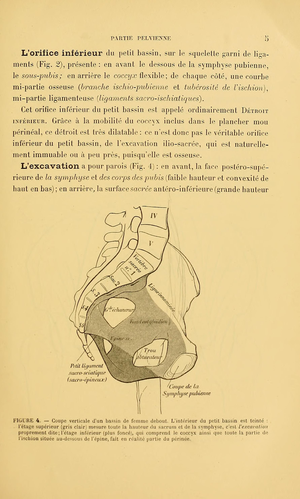

Página 3 · Parte A · Paredes
Três pontos que o dedo acha — e nos quais todo o resto se pendura
Anatomia não gruda, e quase sempre a conclusão é a errada: que o problema é falta de memória.
Não é. É que cada estrutura costuma ser explicada em relação a outra estrutura que também não se conhece — encadeia-se desconhecido em desconhecido, e o mapa nunca fecha.
Por que anatomia não gruda — e o problema não é seu
Existe um motivo estrutural para anatomia escorrer da cabeça, e ele não é falta de esforço: cada estrutura é ensinada em relação a outra estrutura que também não se conhece. O ligamento cardinal fica ao lado do útero; o útero fica atrás da bexiga; a bexiga fica acima do diafragma urogenital; o diafragma urogenital fica abaixo do diafragma pélvico. Cada frase é verdadeira e cada frase é inútil isolada, porque todas encadeiam desconhecido em desconhecido. O mapa nunca fecha, e a conclusão que sobra é a errada — a de que faltou memória. Faltou ponto de partida. É difícil mesmo, e por isso existe um jeito.
A saída: três pontos, e só três
A saída é fixar três pontos estáveis, palpáveis e poucos, e pendurar tudo neles. Três é o número certo: dois não orientam em três direções, e quatro já é lista — a partir do quarto ponto, o referencial vira mais uma coisa a decorar, que é exatamente o que se quer evitar. E os três não foram escolhidos por serem bonitos: são os três pontos que a clínica toca. O promontório no toque vaginal e na fixação de tela; as espinhas na avaliação da descida fetal; a sínfise como referência anterior de todo o chão. Aprender os três é levar três condutas de brinde.
Os três, um a um: sínfise, promontório, espinhas
Âncora 1 — SÍNFISE PÚBICA. Fica à frente e embaixo: é o osso duro que se sente no meio, logo acima da genitália. Tudo o que é anterior se mede a partir dela. É a única das três que se acha por fora, com a mão sobre a pele — o que a torna o ponto de calibração mais barato dos três.
Âncora 2 — PROMONTÓRIO SACRAL. Fica atrás e em cima: é o degrau onde a coluna lombar deixa de ser lombar e vira sacro. Tudo o que é posterior e superior se mede a partir dele. É o ponto que o dedo procura no toque vaginal quando se quer avaliar a bacia.
Âncora 3 — ESPINHAS ISQUIÁTICAS. Ficam nas laterais, no meio: uma de cada lado, na altura de aproximadamente metade do canal. São o zero de referência da descida fetal. Anatomicamente, cada espinha é uma saliência óssea pontiaguda, projetada para dentro e para trás, na face interna do ísquio — situada entre duas reentrâncias do osso, uma acima e outra abaixo. E há um jeito concreto de encontrá-la: ao toque vaginal, com o dedo indicador dentro e apontando para o lado, na altura de mais ou menos metade do canal, sente-se de cada lado uma saliência dura e pontuda que aparece de repente numa parede lisa. Ela é discreta — não é um bico grande, é um relevo pequeno que se percebe justamente porque tudo em volta é liso. E há um confirmador: ao lado dela, indo para trás, sente-se uma corda tensa, que é o ligamento que sai da espinha em direção ao sacro. Achou a corda, achou a espinha.
Repare no que os três têm em comum, porque é isso que os qualifica como âncora: são osso, não se movem, e alguém consegue tocá-los — dois por dentro, um por fora. Estrutura que se desloca não serve de referência; estrutura inalcançável não serve de referência clínica.
O contrato de leitura: nada entra sem endereço
Daqui em diante vale uma regra, e ela é o que impede o mapa de desmontar: nenhuma estrutura nova entra sem uma frase que a posicione em relação a pelo menos uma das três âncoras. Frase curta, no padrão "prende-se aqui à frente, vem para trás e para baixo, e fecha o espaço entre a sínfise e o cóccix". Não é firula de redação: é o que converte um nome numa posição. Toda vez que uma estrutura aparecer e a frase de endereço não vier junto, é sinal de que ela ainda não foi aprendida — só foi lida.

Três âncoras no mesmo plano: sínfise à frente, promontório atrás e espinha isquiática na lateral.
Farabeuf, L.-H.; Varnier, H. Introduction à l'étude clinique et à la pratique des accouchements. Paris: G. Steinheil, 1908, FIGURE 4, p. 5. Domínio público.
Quiz — fixação
Por que a espinha isquiática serve como âncora de referência clínica, e o corpo do útero não serve?
- Gabarito B. Uma âncora precisa de três propriedades ao mesmo tempo: ser fixa (para que a medida de hoje valha amanhã), ser dura (para que a referência não se deforme sob o dedo) e ser alcançável (para que exista clinicamente, e não só no atlas). O útero falha na primeira e na segunda — muda com o ciclo, com a gestação, com a paridade e com a própria posição da paciente.
- (A) é falso de fato: a espinha é pequena e discreta, e o texto insiste nisso justamente porque o leitor tende a procurar um bico grande e não achar nada.
- (C) é falso: o colo e o corpo uterino são acessíveis ao toque; o problema não é acesso, é estabilidade.
- (D) é irrelevante e falso — ter nome próprio não confere função de referencial; o útero também tem.
- Por que cair na (A): existe um pressuposto silencioso de que referência boa é referência óbvia. Aqui é o contrário — a espinha é discreta e ainda assim é a melhor âncora lateral, porque o que a qualifica é ser imóvel, e não ser evidente.
O contrato de leitura estabelece que nenhuma estrutura nova entra sem uma frase que a posicione em relação a pelo menos uma das três âncoras. Qual das descrições abaixo cumpre esse contrato?
- Gabarito C. É a única que ancora em osso conhecido e fixo — púbis à frente, cóccix atrás — e ainda entrega a geometria do que a estrutura faz (fecha um vão entre dois pontos). Depois de ler essa frase, o leitor consegue apontar onde a estrutura está mesmo sem figura, que é exatamente o teste.
- (A) ancora no útero: móvel, e portanto endereço instável — além de encadear com "paramétrio", que é outro termo a explicar.
- (B) é o erro clássico do módulo em estado puro: ancora uma estrutura desconhecida em outra estrutura desconhecida, e ainda usa "abaixo" sem dizer abaixo em relação a quê — numa pelve, isso inverte a pilha na cabeça de quem lê.
- (D) descreve o que a estrutura faz (divide) sem dizer onde ela está; função não é endereço.
- Por que cair na (B): ela parece posicional, porque tem uma preposição de lugar. A pegadinha é que preposição de lugar sem referencial fixo não posiciona nada — é o mesmo problema de dizer "à direita" sem dizer de quem.